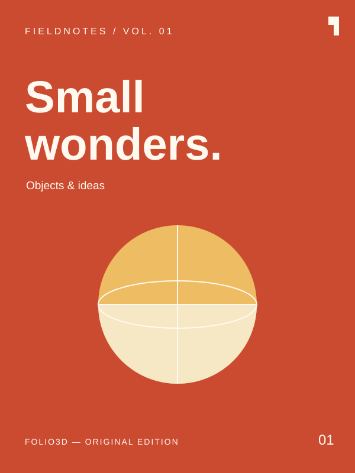
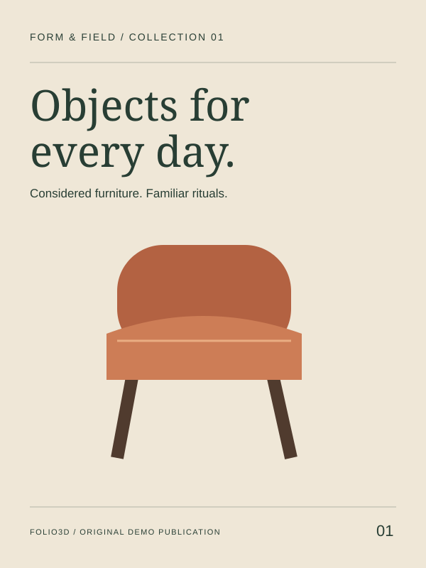
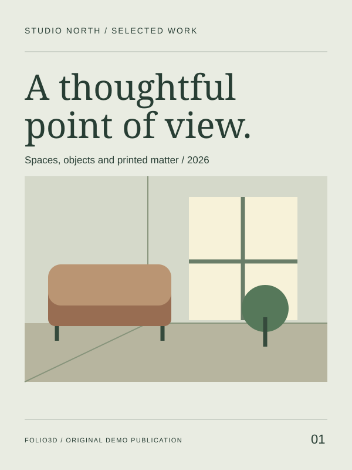

01 / Magazine / PDF / 6 pages
Fieldnotes
Objects, ideas and a different point of view. The original Folio3D sample magazine.
Demo 03 / The digital bookshelf
Three publications, a few different perspectives. Pick a cover and settle into a larger reading view.

01 / Magazine / PDF / 6 pages
Objects, ideas and a different point of view. The original Folio3D sample magazine.

02 / Catalog / Images / 6 pages
Considered furniture and small objects. A collection for the everyday.

03 / Portfolio / Images / 6 pages
A collection of quiet spaces, sculptural objects and thoughtful printed matter.
One more for the shelf
Choose a PDF from your device to open it in the reader. Your file stays in your browser.
Close the reader with Escape or the Close button.